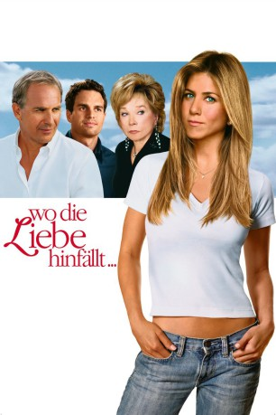
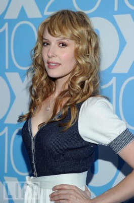
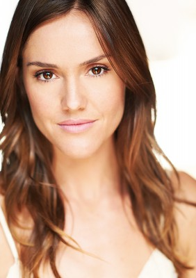
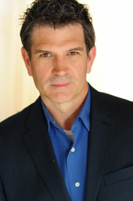

#4669 Wo die Liebe hinfällt...
Alternativ: Rumor Has It...
 
 IMDB-Wertung: 5.5 / 10
IMDB-Wertung: 5.5 / 10  Metascore: 0
Metascore: 0 
Die Nachrufschreiberin Sarah erfährt auf der Hochzeit ihrer Schwester vom kurzen Seitensprung der inzwischen verstorbenen Mutter mit Playboy Beau Burroughs - eine Woche vor deren damaliger Vermählung! Kurz nachgerechnet - und schon glaubt Sarah, sie sei bei eben jener Affäre gezeugt worden. Und zwar von einem Mann, der zuvor schon ihre Oma beglückt hatte! Sarahs Welt gerät ins Wanken und sie begibt sich auf die Suche nach dem vermeintlichen Papa. Keine besonders gute Idee, wie sich schnell herausstellt.
Jahr: 2005
Dauer: 96 Minuten
FSK: 0
Land: USA Studio: Warner Bros.Tonspuren:
Untertitel: Deutsch,
Auflösung: 1080p (1920x1080) Größe: 7854 MB
Genre: Drama, Komödie, Liebe
Regisseur:  Rob Reiner
Rob Reiner
Drehbuch: Roi Cooper Megrue
Soundtrack:
Darsteller:
 Jennifer Aniston als Sarah Huttinger
Jennifer Aniston als Sarah Huttinger Kevin Costner als Beau Burroughs
Kevin Costner als Beau Burroughs Shirley MacLaine als Katharine Richelieu
Shirley MacLaine als Katharine Richelieu Mark Ruffalo als Jeff Daly
Mark Ruffalo als Jeff Daly Richard Jenkins als Earl Huttinger
Richard Jenkins als Earl Huttinger Christopher McDonald als Roger McManus
Christopher McDonald als Roger McManus- Steve Sandvoss als Scott
 Mena Suvari als Annie Huttinger
Mena Suvari als Annie Huttinger Mike Vogel als Blake Burroughs
Mike Vogel als Blake Burroughs- Rob Lanza als New Year's Eve M.C.
- Lisa Vachon als Young Katharine
- Trevor Stock als Young Beau
 Jennifer Taylor als Jocelyn Richelieu
Jennifer Taylor als Jocelyn Richelieu- Marcia Ann Burrs als Pasadenan Wife
- Lynn Wanlass als Pasadenan Wife
 Mary Anne McGarry als Pasadenan Wife
Mary Anne McGarry als Pasadenan Wife Maree Cheatham als Party Guest
Maree Cheatham als Party Guest- Gregory White als Party Guest
 Frank Novak als Party Guest
Frank Novak als Party Guest- Terrie Snell als Party Guest
- Shannon Farnon als Party Guest
-  Jenny Wade als Nikki
- Erinn Bartlett als Donna
- Kate McClafferty als Bridesmaid
 Googy Gress als Burly Man
Googy Gress als Burly Man- Rolando Molina als Mover
- Carmela Rappazzo als Party Planner
-  Erinn Hayes als Wedding Coordinator
- Christopher Stapleton als Bartender
 Jaime Ray Newman als Conference Greeter
Jaime Ray Newman als Conference Greeter Andy Milder als Conference Attendee
Andy Milder als Conference Attendee Gabriel Jarret als Conference Attendee
Gabriel Jarret als Conference Attendee Clyde Kusatsu als Conference Attendee
Clyde Kusatsu als Conference Attendee- John Sterling Carter als Conference Attendee
- Mike Baldridge als Reporter
- Donna Cooper als Reporter
-  Paul Ganus als Co-Pilot
- George Gerdes als Charity Dinner Guests
 Lyman Ward als Charity Dinner Guests
Lyman Ward als Charity Dinner Guests Jordan Lund als Charity Dinner Guests
Jordan Lund als Charity Dinner Guests- John E. Byrd als Doorman
 Anne Bancroft als Mrs. Robinson , archive footage, uncredited
Anne Bancroft als Mrs. Robinson , archive footage, uncredited Kathy Bates als Aunt Mitsy , uncredited
Kathy Bates als Aunt Mitsy , uncredited- Joshua Bevier als Himself , uncredited
 Joan Blair als Reporter , uncredited
Joan Blair als Reporter , uncredited Colleen Camp als Pasadenan Wife , uncredited
Colleen Camp als Pasadenan Wife , uncredited- Michael Chen als Rickshaw Driver , uncredited
 Curt Clendenin als Wedding Guest , uncredited
Curt Clendenin als Wedding Guest , uncredited Bill Clinton als Himself , archive footage, uncredited
Bill Clinton als Himself , archive footage, uncredited- Michael Durrell als Patriarch , uncredited
Datei: X:\2005(N-Z)\Wo die Liebe hinfällt... (2005, FSK0, 1920x1080).mkv seit 02.11.2016
Festplatte: HD 2005(G-Z)-2006(A-Z)
 Es gibt insgesamt 50 Filme in der Gruppe '2005(N-Z)'
Es gibt insgesamt 50 Filme in der Gruppe '2005(N-Z)'